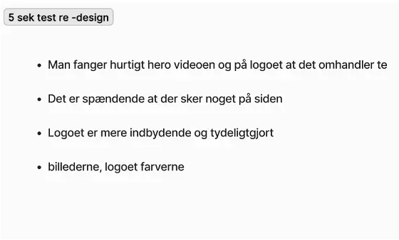

tema 05
I dette Tema skulle vi lave et re-design af en virksomheds allerede eksisterende website i grupper. Vi skulle optimere sitet ved brug af vores viden om konventioner og designprincipper, og gøre brug af teste. I dette forløb lærte vi også om videoproduktion fra optagelse til redigering og lyd, interview teknikker og nye filformater. Vores gruppe startede med test af nuværende site og moodboards for at skabe overblik over hvor siden kunne optimeres.
Designprocess
Vi udarbejdede en styletile og et sitemap for det eksisterende site og overvejede derefter muligheder for et re-design. Vi simplificerede sitet markant, herunder menuens struktur og det generelle design. Naturligvis undersøgte vi forretningens målgruppe og tilpassede designet til ejernes behov og præferencer.
BERT test
Vi blev introduceret for Bert-testen, som vi brugte til at finde ud af hvad brugerens opfattelse var af den eksisterende website. Her fik vi fine resultater som vi godt kunne bruge til at optimere siden.
5-sekunderstest før og efter
Særligt vores resultater fra 5 sekunders og tænk-højt test som vi udførte på flere af vores medstuderende påvirkede vores re-designløsning. Vi lavede en simpel og overskuelig hjemmeside med varme farver. Vi fik skåret ned på mængden af tekst og lange sætninger for at have et større fokus på readability. Vi brugte flere af de konventioner og designprincipper vi har lært om til f.eks.. At forkorte lage sætninger ift. Både skærm og at man taber læseren undervejs.Vi forkortede brugerrejsen en stor del så der skulle færrer klik til at komme ind på den fortrukne side.
Video og premiere pro
Jeg blev introduceret til Adobe Premiere Pro. Jeg lærte om hele processen af videoproduktion, inklusiv præproduktion, optagelse og postproduktion. Jeg opnåede erfaring med at anvende et iPhone-kamera til videooptagelse samt ekstern lydoptagelse under to forskellige interview-situationer, hvilket forbedrede mine evner i både video- og fotoproduktion. Yderligere udviklede jeg mine redigeringsfærdigheder i Premiere Pro, hvor jeg anvendte B-rolls, framings, intro/outro-tekster og klippeteknikker. Brugen af B-rolls var særligt givende, da de tilføjede variation og understøttede fortællingen, og jeg brugte dem til at skjule overgange i hovedoptagelserne. Jeg eksperimenterede med nye redigeringsmetoder og benyttede mig af en mikrofon fra Tech & Story Lab for at sikre den højeste lydkvalitet i mine videooptagelser.